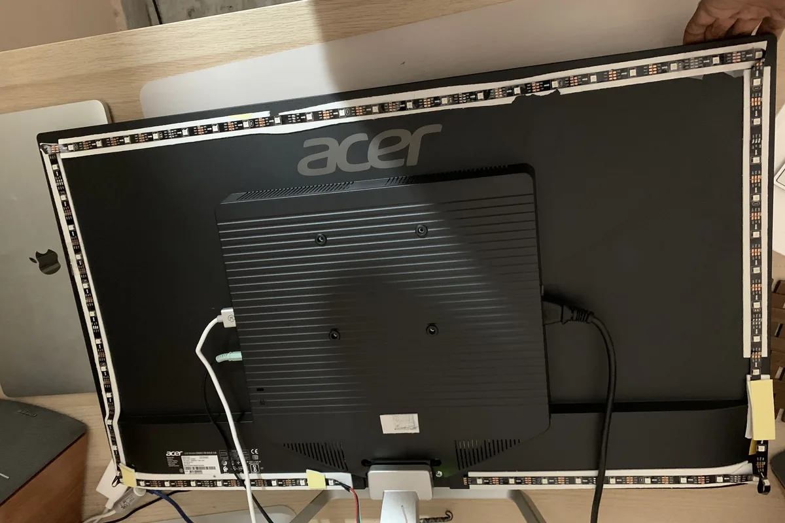
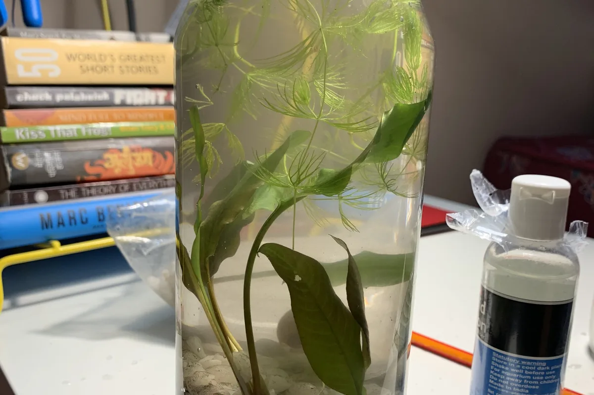
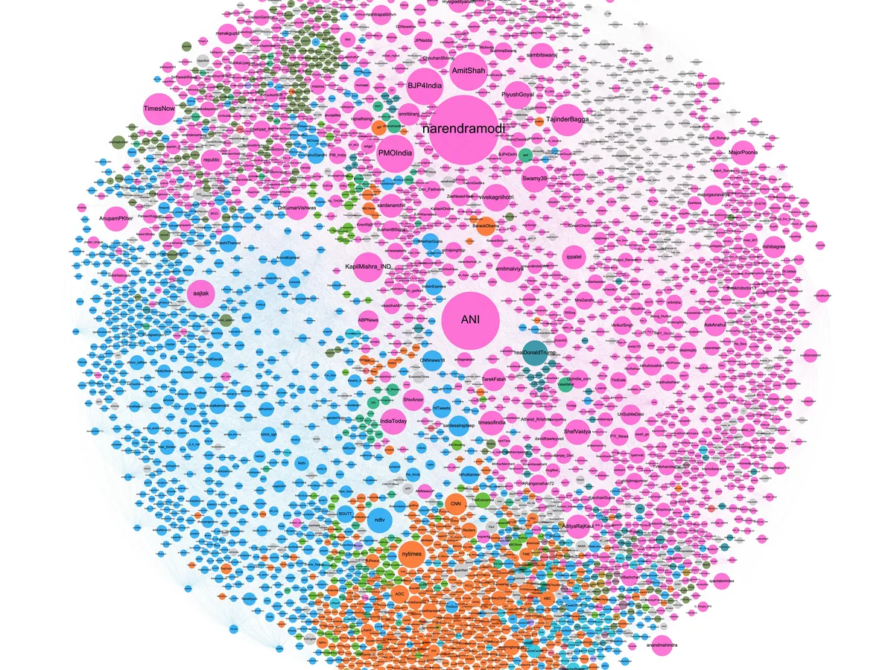
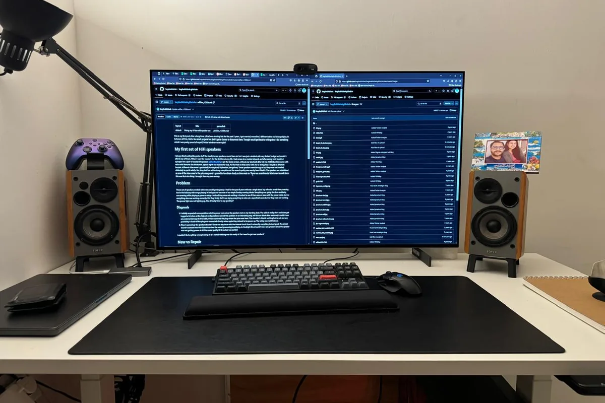

BUILD 01
CoastGen
Turns a photograph into a 3D-printable coaster file. The hard part is not the preview; it is producing geometry that survives the slicer.
Open CoastGen →
output: STL
ML platform engineer by dayworkbench after hours
GenAI experiments, useful CAD, electronics, 3D-printed objects, and self-hosted systems. This is where I keep what shipped, what broke, and the files worth reusing.
selected builds / current bench
Projects earn a place here when there is something real to inspect: a file, a service, a result, or a useful failure.
BUILD 01
Turns a photograph into a 3D-printable coaster file. The hard part is not the preview; it is producing geometry that survives the slicer.
BUILD 02
I translated a contributor's heuristics into a scanner, replayed them historically, and published the result when the main thesis failed.
*Six gross trades; one winner supplied almost all profit.
Read what failed →field notes / earlier builds
Earlier first-person build stories, repair logs, and technical notes from the workbench.

Arduino · WS2812 · HyperionDIY monitor AmbilightRead the build story →
plants · patience · IKEA carafeJarrariumRead the build story →
50M tweets · Spark · GephiPolitical network analysisOpen the analysis →
diagnosis · soldering · repairEdifier R1280T repairRead the repair log →